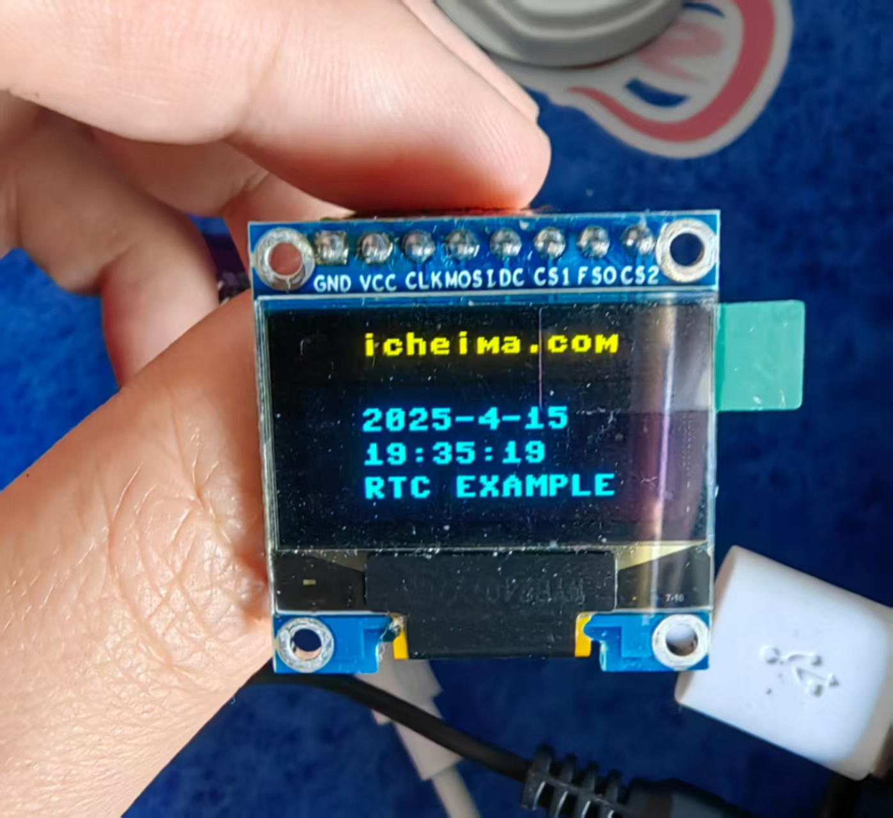
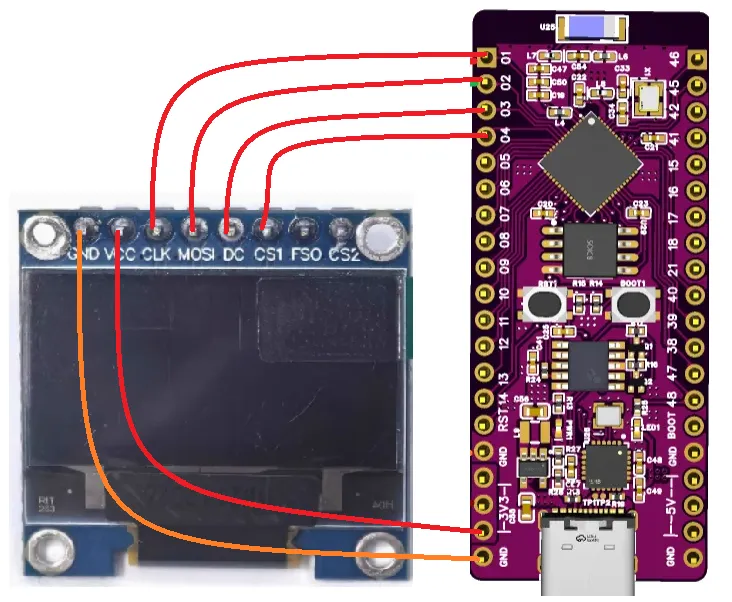

<!DOCTYPE lake>
<p data-lake-id="ue1edb2c7" id="ue1edb2c7"><span class="lake-fontsize-12" data-lake-id="uc53fcb73" id="uc53fcb73" style="color: rgb(64, 64, 64); background-color: rgb(252, 252, 252)">参考文档：</span><a data-lake-id="u7b7ff8d1" href="https://docs.micropython.org/en/latest/library/machine.RTC.html#machine-rtc" id="u7b7ff8d1" rel="noopener noreferrer" target="_blank"><span class="lake-fontsize-12" data-lake-id="u08eee227" id="u08eee227">https://docs.micropython.org/en/latest/library/machine.RTC.html#machine-rtc</span></a></p><p data-lake-id="u98d01004" id="u98d01004"><span class="lake-fontsize-12" data-lake-id="uf5b810a8" id="uf5b810a8">​</span><br/></p><h2 data-lake-id="rDWLB" id="rDWLB"><span data-lake-id="u44906595" id="u44906595" style="color: rgb(64, 64, 64)">实时时钟（Real-Time Clock）</span></h2><p data-lake-id="uc15a5059" id="uc15a5059"><strong><span class="lake-fontsize-12" data-lake-id="u5cfdba7b" id="u5cfdba7b" style="color: rgb(64, 64, 64)">定义</span></strong><span class="lake-fontsize-12" data-lake-id="u152123b3" id="u152123b3" style="color: rgb(64, 64, 64)">：<br/></span><span class="lake-fontsize-12" data-lake-id="u2d384f05" id="u2d384f05" style="color: rgb(64, 64, 64)">RTC 是计算机或电子设备中的一种硬件时钟，用于在设备断电后持续跟踪时间。它依靠独立的电源（如主板上的纽扣电池）运行，确保时间和日期信息不会丢失。</span></p><p data-lake-id="u447eb64f" id="u447eb64f"><strong><span class="lake-fontsize-12" data-lake-id="u58cd5191" id="u58cd5191" style="color: rgb(64, 64, 64)">核心特点</span></strong><span class="lake-fontsize-12" data-lake-id="ua7f829eb" id="ua7f829eb" style="color: rgb(64, 64, 64)">：</span></p><ul list="u568b48f4"><li data-lake-id="u71977128" fid="ubfb32df9" id="u71977128"><strong><span class="lake-fontsize-12" data-lake-id="u2bcd366f" id="u2bcd366f" style="color: rgb(64, 64, 64)">低功耗</span></strong><span class="lake-fontsize-12" data-lake-id="uf20c0e91" id="uf20c0e91" style="color: rgb(64, 64, 64)">：依靠小型电池可运行数年。</span></li><li data-lake-id="ue4a5f008" fid="ubfb32df9" id="ue4a5f008"><strong><span class="lake-fontsize-12" data-lake-id="ud45134f7" id="ud45134f7" style="color: rgb(64, 64, 64)">精准性</span></strong><span class="lake-fontsize-12" data-lake-id="u9fd3f594" id="u9fd3f594" style="color: rgb(64, 64, 64)">：通常使用晶振保持时间精度。</span></li><li data-lake-id="u255d4ed3" fid="ubfb32df9" id="u255d4ed3"><strong><span class="lake-fontsize-12" data-lake-id="u89164149" id="u89164149" style="color: rgb(64, 64, 64)">独立性</span></strong><span class="lake-fontsize-12" data-lake-id="u906e3898" id="u906e3898" style="color: rgb(64, 64, 64)">：与主系统电源分离，断电后仍工作。</span></li></ul><p data-lake-id="ufac94db5" id="ufac94db5"><strong><span class="lake-fontsize-12" data-lake-id="u3fbb3655" id="u3fbb3655" style="color: rgb(64, 64, 64)">应用场景</span></strong><span class="lake-fontsize-12" data-lake-id="u32a6c5da" id="u32a6c5da" style="color: rgb(64, 64, 64)">：</span></p><ul list="ub1f67323"><li data-lake-id="u27e87a30" fid="ubb1cfe7c" id="u27e87a30"><span class="lake-fontsize-12" data-lake-id="uba49487b" id="uba49487b" style="color: rgb(64, 64, 64)">计算机、手机、嵌入式设备（如智能家居、工业控制器）的系统时间管理。</span></li><li data-lake-id="uf357fd8e" fid="ubb1cfe7c" id="uf357fd8e"><span class="lake-fontsize-12" data-lake-id="ub334476e" id="ub334476e" style="color: rgb(64, 64, 64)">记录日志、事件时间戳、定时唤醒设备等。</span></li></ul><p data-lake-id="ue3c8a3ab" id="ue3c8a3ab"><span class="lake-fontsize-12" data-lake-id="uef749dd8" id="uef749dd8">​</span><br/></p><p data-lake-id="ua0757ce5" id="ua0757ce5"><span class="lake-fontsize-12" data-lake-id="u46c29bde" id="u46c29bde" style="color: rgb(64, 64, 64); background-color: rgb(252, 252, 252)">RTC时间格式为：</span><strong><span class="lake-fontsize-12" data-lake-id="u06dc96de" id="u06dc96de" style="color: rgb(64, 64, 64); background-color: rgb(252, 252, 252)">(year, month, day, weekday, hours, minutes, seconds, subseconds)</span></strong></p><p data-lake-id="uc5fdedd8" id="uc5fdedd8"><span class="lake-fontsize-12" data-lake-id="udfe1975e" id="udfe1975e" style="color: rgb(64, 64, 64); background-color: rgb(252, 252, 252)">weekday: 0-6的范围，表示周一到周日</span></p><p data-lake-id="ubf97c183" id="ubf97c183"><span class="lake-fontsize-12" data-lake-id="ud72189e2" id="ud72189e2" style="color: rgb(64, 64, 64); background-color: rgb(252, 252, 252)">subseconds: 时间戳的小数部分</span></p><p data-lake-id="u9868f8bf" id="u9868f8bf"><span class="lake-fontsize-12" data-lake-id="ua4b8ce80" id="ua4b8ce80" style="color: rgb(64, 64, 64); background-color: rgb(252, 252, 252)">​</span><br/></p><h3 data-lake-id="HV32f" id="HV32f"><span data-lake-id="u9c5101b9" id="u9c5101b9" style="color: rgb(64, 64, 64); background-color: rgb(252, 252, 252)">示例代码</span></h3><h4 data-lake-id="QjJqY" data-lake-index-type="2" id="QjJqY"><span data-lake-id="ud62993d8" id="ud62993d8">导包</span></h4><span class="yuque-card-unsupported">[codeblock]</span><h4 data-lake-id="K3TAP" data-lake-index-type="2" id="K3TAP"><span data-lake-id="u131367ec" id="u131367ec">初始化RTC</span></h4><span class="yuque-card-unsupported">[codeblock]</span><h4 data-lake-id="Mfbn9" data-lake-index-type="2" id="Mfbn9"><span data-lake-id="u6d926deb" id="u6d926deb">读取RTC的值</span></h4><span class="yuque-card-unsupported">[codeblock]</span><p data-lake-id="u824d3193" id="u824d3193"><br/></p><p data-lake-id="uab17c6a1" id="uab17c6a1"><br/></p><p data-lake-id="ue5283413" id="ue5283413"><br/></p><h2 data-lake-id="FcWxN" id="FcWxN"><span data-lake-id="u8a11d15f" id="u8a11d15f">练习：小时钟</span></h2><p data-lake-id="ucbdad392" id="ucbdad392"><span class="lake-fontsize-12" data-lake-id="u371eb0cb" id="u371eb0cb">请结合前面所学的SSD1306屏幕驱动和本节RTC案例，制作一个简易的小时钟。</span></p><p data-lake-id="u6c634705" id="u6c634705" style="text-align: center"></p><h3 data-lake-id="K1Rq6" id="K1Rq6"><span data-lake-id="ua4a18732" id="ua4a18732">实现步骤</span></h3><h4 data-lake-id="a1s8c" data-lake-index-type="2" id="a1s8c"><span data-lake-id="udff98a1a" id="udff98a1a">如图接线</span></h4><p data-lake-id="u22e7af06" id="u22e7af06"></p><h4 data-lake-id="pLRZA" data-lake-index-type="2" id="pLRZA"><span data-lake-id="u7ff12b31" id="u7ff12b31">导包</span></h4><span class="yuque-card-unsupported">[codeblock]</span><h4 data-lake-id="I1Yfm" data-lake-index-type="2" id="I1Yfm"><span data-lake-id="uf124a953" id="uf124a953">初始化RTC </span></h4><span class="yuque-card-unsupported">[codeblock]</span><h4 data-lake-id="FVlvg" data-lake-index-type="2" id="FVlvg"><span data-lake-id="uc101ebef" id="uc101ebef">初始化SoftSPI</span></h4><span class="yuque-card-unsupported">[codeblock]</span><h4 data-lake-id="e4NfW" data-lake-index-type="2" id="e4NfW"><span data-lake-id="u4b8c1754" id="u4b8c1754">初始化屏幕</span></h4><span class="yuque-card-unsupported">[codeblock]</span><h4 data-lake-id="dNbIj" data-lake-index-type="2" id="dNbIj"><span data-lake-id="u5cc977f1" id="u5cc977f1">编写核心逻辑</span></h4><p data-lake-id="ub6771182" id="ub6771182"><span data-lake-id="u9f193c20" id="u9f193c20">获取RTC的时间，然后渲染在屏幕上</span></p><span class="yuque-card-unsupported">[codeblock]</span><p data-lake-id="uce358c46" id="uce358c46"><br/></p>